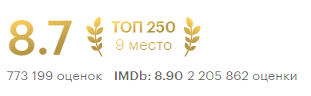
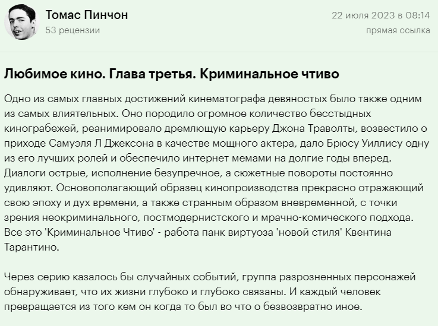

<!DOCTYPE html>
<html>
    <head>
        <link rel="stylesheet" href="style.css">
    </head>
</html>
<header class="header">
    <nav>
        <ul class="films">
            <li class="films__item"><a class="films__item-link" href="film1.html" target="_self">Оппенгеймер</a></li>
            <li class="films__item"><a class="films__item-link" href="film2.html" target="_self">Зелёная миля</a></li>
            <li class="films__item"><a class="films__item-link" href="film3.html" target="_self">Леон</a></li>
            <li class="films__item"><a class="films__item-link" href="film4.html" target="_self">Криминальное чтиво</a></li>
        </ul>
    </nav>
</header>
<main class="main">
    <section class="film">
        <h3 class="heading">О фильме</h3>
        <div class="film__container">
            
            <div class="film__text-container">
                <h2 class="film__name">Криминальное чтиво</h2>
                <p class="film__description">Двое бандитов Винсент Вега и Джулс Винфилд ведут философские беседы в перерывах между разборками и решением проблем с должниками криминального босса Марселласа Уоллеса.

                    В первой истории Винсент проводит незабываемый вечер с женой Марселласа Мией. Во второй рассказывается о боксёре Бутче Кулидже, купленном Уоллесом, чтобы сдать бой. В третьей истории Винсент и Джулс по нелепой случайности попадают в неприятности.</p>
            </div>
        </div>
    </section>
    <section class="actors">
        <h3 class="heading">Актёрский состав</h3>
        <ul class="film__actors">
            <li class="actor"><p class="actor__name">Джон Траволта</p></li>
            <li class="actor"><p class="actor__name">Сэмюэл Л.Джексон</p></li>
            <li class="actor"><p class="actor__name">Брюс Уиллис</p></li>
            <li class="actor"><p class="actor__name">Ума Турман</p></li>
        </ul>
    </section>
    <section class="information">
        <h3 class="heading">Информация о фильме</h3>
        <table class="film__information" border="0" cellspacing="12px">
            <tr>
                <td>Год выпуска</td>
                <td>1994</td>
            </tr>
            <tr>
                <td>Страна</td>
                <td>США</td>
            </tr>
            <tr>
                <td>Режиссер</td>
                <td>К. Тарантино</td>
            </tr>
            <tr>
                <td>Сценарист</td>
                <td>К. Тарантино, Р. Эвери</td>
            </tr>
            <tr>
                <td>Дата проката</td>
                <td>21 мая 1994</td>
            </tr>
        </table>
        <h3 class="heading">Рейтинг и отзывы</h3>
        
        <div class="review__container">
            
            
        </div>
        
    </section>
    <section class="trailer">
        <h3 class="heading">Трейлер</h3>
        <div class="trailer__container">
            <iframe width="560" height="315" src="https://www.youtube.com/embed/vBADUmfa9Q4?si=e4m6tT9Jp4zDtOyF" title="YouTube video player" frameborder="0" allow="accelerometer; autoplay; clipboard-write; encrypted-media; gyroscope; picture-in-picture; web-share" allowfullscreen></iframe>
        </div>
    </section> 
</main>
